Menu
Hersenen en zintuigenOefentoets Neuroanatomie
Examen inleveren
Weet je zeker dat je het examen afsluit?
Examen resetten
Al je antwoorden worden gewist en je begint opnieuw. Weet je het zeker?
Jouw resultaten
Hersenen en zintuigen · Oefentoets Neuroanatomie
—
/ 40
0
Goed
0
Fout
0
Niet beantwoord
Vraag 1
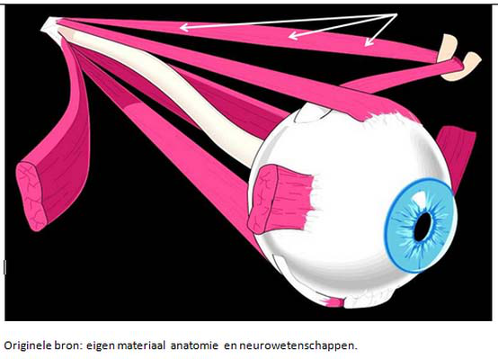
Kies de juiste alternatieven.
Afgebeeld is een . De met pijlen aangeduide spier wordt geïnnerveerd door de nervus .
Vraag 2
Aan welke zijde van het lichaam vallen de verschillende motorische en sensorische modaliteiten uit (gerekend vanaf de zijde van de afwijking) bij een halfzijdige laesie van het ruggenmerg ter hoogte van C4?
gnostische sensibiliteit
motoriek
vitale sensibiliteit
Vraag 3
Originele bron: anatomie en neurowetenschappen. De afbeelding laat een ventraal aangezicht van het brein zien. Met welke letter wordt de nervus vagus aangeduid?
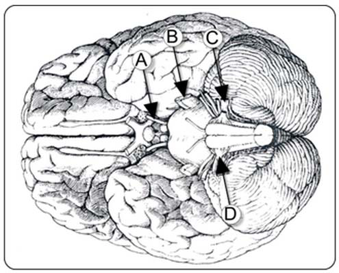
Vraag 4
Kies de juiste alternatieven.
Een laesie in de laterale hemisfeer van het cerebellum levert motorische klachten op, omdat de projecterende banen vanuit het cerebellum naar de motorneuronen in het ruggenmerg .
Vraag 5
Sommige functies zijn in bijzondere mate gerelateerd aan bepaalde hersenstructuren. Wat hoort bij wat?
Sleep een optie naar de bijbehorende rij, of tik eerst op een kaart en dan op een rij.
leren en geheugen
Sleep hier naartoe
emoties
Sleep hier naartoe
planning van gedrag
Sleep hier naartoe
werkgeheugen, organisatie gedrag
Sleep hier naartoe
Vraag 6
Oligodendrogliomen zijn zeldzame hersentumoren die ontstaan uit oligodendrocyten. In welke twee gebieden in het zenuwstelsel kunnen deze tumoren voorkomen?
Meerdere antwoorden mogelijk.
Vraag 7
Dit angiogram toont de Cirkel van Willis van bovenaf gezien. Naar welk bloedvat wijst de pijl?
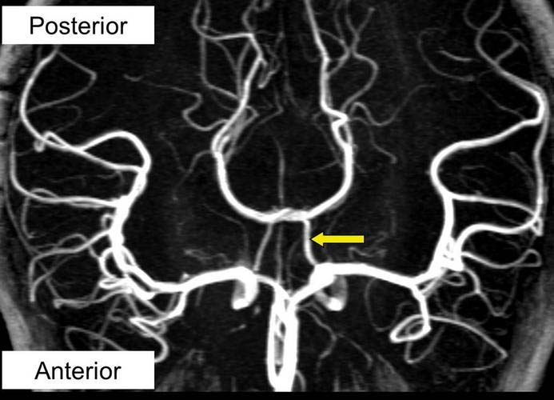
Vraag 8
Welke structuur, behorende tot de basale ganglia, ontvangt projecties uit alle delen van de cerebrale cortex?
Vraag 9
Kies de juiste alternatieven.
De musculus tensor tympani is aangehecht aan en wordt geïnnerveerd door de nervus .
Vraag 10
Schwannoma tumoren zijn traag groeiende tumoren die ontstaan uit de cellen van Schwann. In welke twee gebieden in het zenuwstelsel kunnen deze tumoren voorkomen?
Meerdere antwoorden mogelijk.
Vraag 11
Met welk cijfer wordt de cingulaire cortex aangegeven in onderstaande afbeelding?
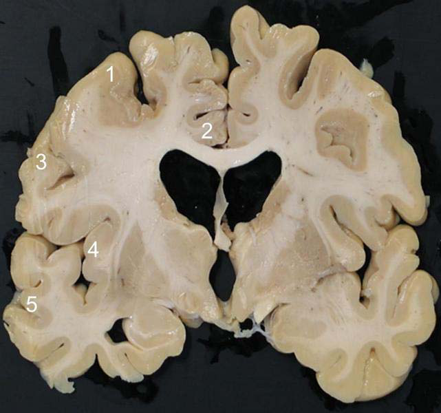
Vraag 12
Zie de afbeelding met oogstanden. Deze persoon werd gevraagd achtereenvolgens recht vooruit (foto boven), naar rechts (foto midden) en naar links (foto onder) te kijken. Welke craniale zenuw is aangedaan?
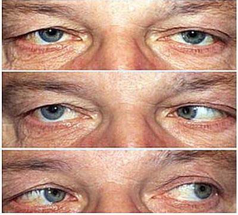
Vraag 13
Tussen welke van de volgende twee structuren maakt de fornix een functionele verbinding mogelijk?
Meerdere antwoorden mogelijk.
Vraag 14
Zie de afbeelding hierboven met oogstanden. Deze persoon werd gevraagd achtereenvolgens recht vooruit (foto boven), naar rechts (foto midden) en naar links (foto onder) te kijken. Welke craniale zenuw is aangedaan?
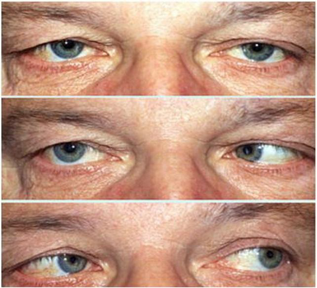
Vraag 15
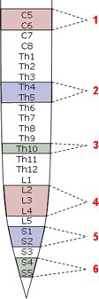
Bij welke ruggenmergsegmenten horen de genoemde reflexen en dermatomen?
Sleep een optie naar de bijbehorende rij, of tik eerst op een kaart en dan op een rij.
bicepspeesreflex
Sleep hier naartoe
dermatoom ter hoogte van de tepel
Sleep hier naartoe
dermatoom ter hoogte van de navel
Sleep hier naartoe
kniepeesreflex
Sleep hier naartoe
achillespeesreflex en voetzoolreflex
Sleep hier naartoe
anale reflex
Sleep hier naartoe
Vraag 16
De sutura lambdoidea (schedelnaad zichtbaar op het externe schedel oppervlak) ligt het dichtst bij welke onderliggende hersenkwab?
Vraag 17
Een laesie van de rechter tractus opticus leidt tot uitval van het:
Vraag 18
Welke hersenzenuw wordt aangeduid met de rode cirkel en pijl?
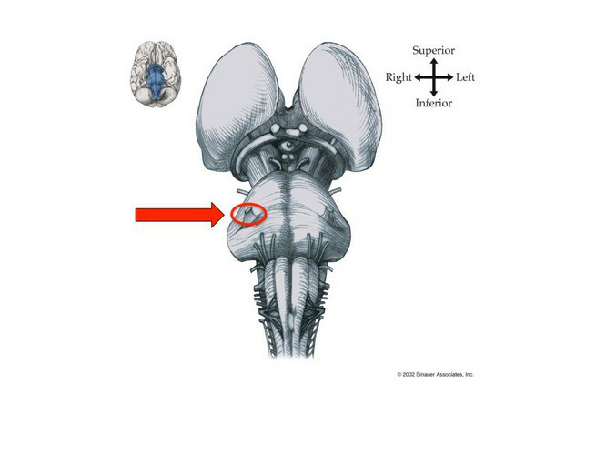
Vraag 19
Het cerebellum kan onderverdeeld worden in functionele gebieden op basis van afferente verbindingen. Wat is de functie van de laterale hemisferen?
Vraag 20
Welke twee gebieden behoren tot het limbisch systeem?
Meerdere antwoorden mogelijk.
Vraag 21
Je ziet hier een histochemische kleuring van het ruggenmerg. In welk gebied verwacht je oligodendrocyten te vinden?
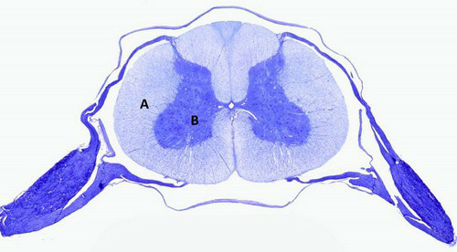
Vraag 22
Welke twee uitspraken zijn waar wat betreft de lokalisatie van de kernen van de hersenzenuwen in de caudale hersenstam?
Meerdere antwoorden mogelijk.
Vraag 23
Door welke structuur worden de linker- en rechter hemisfeer van het cerebellum van elkaar gescheiden?
Vraag 24
Kies de juiste alternatieven.
Tractus corticospinalis (piramidebaan) bestaat uit een gekruist en een niet-gekruist deel. Wat bevindt zich waar in deze afbeelding van het ruggenmerg? Tractus corticospinalis gekruiste deel: . Tractus corticospinalis niet-gekruiste deel: .
Vraag 25
Welke hersenzenuw wordt aangegeven met de rode pijl?
Vraag 26
Is in deze coronale doorsnede van de hersenen de thalamus zichtbaar?
Vraag 27
Deze CT-scan met contrast laat een brughoektumor zien (pijl). Welke hersenzenuw is het meest waarschijnlijk aangedaan?
Vraag 28
Kies de juiste alternatieven.
Twee cowboys kregen ruzie bij het pokeren. Bij het duel dat erop volgde schoot de één de ander in zijn buik. Hierbij werd het ruggenmerg voor de helft geraakt (hemi-sectie ter hoogte van Th10). Wat zijn de gevolgen voor vitale en motorische functies van de benen? De vitale uitval is (ten opzichte van de laesie): De motorische uitval is (ten opzichte van de laesie):
Vraag 29
Cortexgebieden. De stroomgebieden van de a. cerebri posterior, a. cerebri media en a. cerebri anterior zijn van elkaar gescheiden door de zwarte onderbroken lijn. Wat is wat? Koppel elk nummer uit de afbeelding aan het juiste gebied.
Sleep een optie naar de bijbehorende rij, of tik eerst op een kaart en dan op een rij.
Nummer 1
Sleep hier naartoe
Nummer 2
Sleep hier naartoe
Nummer 3
Sleep hier naartoe
Nummer 4
Sleep hier naartoe
Nummer 5
Sleep hier naartoe
Nummer 6
Sleep hier naartoe
Vraag 30
Welke hersenzenuw wordt aangegeven met de rode pijl?
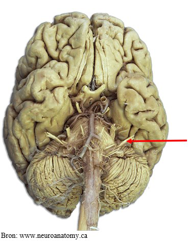
Vraag 31
Welke structuur, behorende tot de basale ganglia, zendt directe dopaminerge projecties uit naar het striatum?
Vraag 32
Door welke hersenzenuw wordt de m. obliquus superior geïnnerveerd?
Vraag 33
Reflexen en dermatomen - ruggenmergsegmenten. Bij welke ruggenmergsegmenten horen de genoemde reflexen en dermatomen? Koppel elk nummer aan de juiste reflex/dermatoom.
Sleep een optie naar de bijbehorende rij, of tik eerst op een kaart en dan op een rij.
Nummer 1
Sleep hier naartoe
Nummer 2
Sleep hier naartoe
Nummer 3
Sleep hier naartoe
Nummer 4
Sleep hier naartoe
Nummer 5
Sleep hier naartoe
Nummer 6
Sleep hier naartoe
Vraag 34
Welke hersenzenuw wordt aangegeven met de rode pijl?
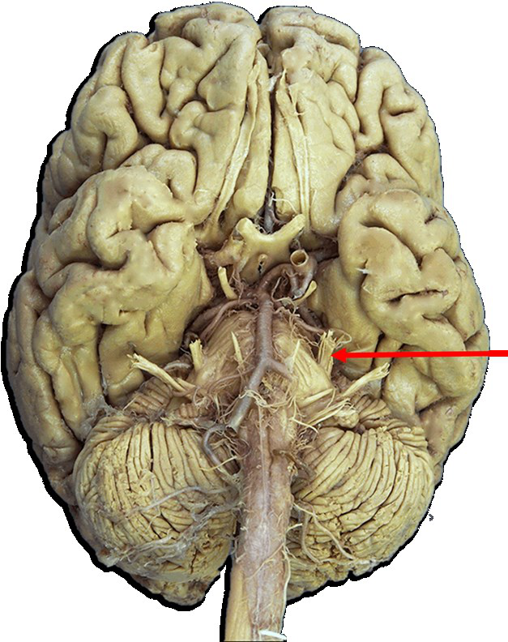
Vraag 35
Welke van de drie cerebellaire pedunkels geeft anatomisch gezien het meeste input aan het cerebellum door?
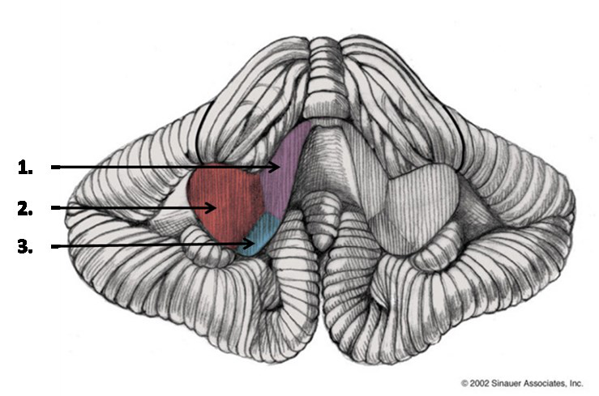
Vraag 36
Welke stelling is waar? Stelling 1: een cochleair implantaat is een goede oplossing voor patiënten wier nervus cochlearis niet werkt. Stelling 2: tonotopische organisatie van het slakkenhuis zorgt ervoor dat je met een cochleair implantaat frequentie specifiek kan stimuleren.
Vraag 37
Van welk specifiek onderdeel van het zenuwstelsel ziet u hier een doorsnede?
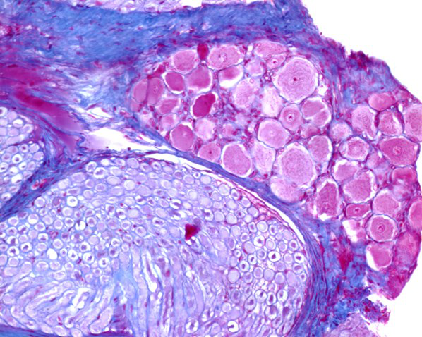
Vraag 38
Reflexen en dermatomen - ruggenmergsegmenten. Bij welke ruggenmergsegmenten (aangeduid met de nummers 1 t/m 6 in de afbeelding) horen de genoemde reflexen en dermatomen?
Sleep een optie naar de bijbehorende rij, of tik eerst op een kaart en dan op een rij.
1
Sleep hier naartoe
2
Sleep hier naartoe
3
Sleep hier naartoe
4
Sleep hier naartoe
5
Sleep hier naartoe
6
Sleep hier naartoe
Vraag 39
Op deze MRI-scan is ter hoogte van de pijl een hersenzenuw te zien, die aankleurt en ontstoken is. De functie van deze zenuw is uitgevallen.
Welke bevinding bij neurologisch onderzoek past hierbij?
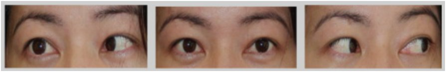
Vraag 40
Een man wordt na een epileptische aanval binnengebracht op de eerste hulp. Uit de anamnese blijkt dat hij al sinds drie jaar perioden heeft waarin hij voor het krijgen van een aanval muziek en geluiden hoort.
Welk hersengebied is het meest waarschijnlijk betrokken bij deze aanvallen?